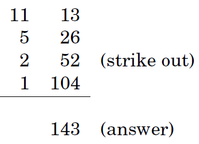

Multiplication and Division Algorithms
Multiplication: method 1

In binary, multiplicative is easy since each intermediate row is either zero or itself left-shifted an appropriate amount of times.
- left-shifting is a quick way to multiply by the base.
- right-shifting is to divide by the base, rounding down if needed.
Pseudocode
x
1function multiply(x,y)2Input: Two n-bit integers x and y, where y>03Output:Their product45if y=0: return 06z=multiply(x, ⌊y/2⌋)7if y is even:8 return 2z // even → left-shift 1 bit9else:10 return x+2z // odd → left-shitf 1 bit +xAnalyzing
Is this algorithm correct?
- The preceding recursive rule is transparently correct.
How long does the algorithm take?
- If and are both bits, then there are intermediate rows, with lengths of up to bits (taking the shifting into account). The total time taken to add up these rows, doing two numbers at a time is

(quadratic in the size of the inputs: still polynomial but much slower than addition.)
- If and are both bits, then there are intermediate rows, with lengths of up to bits (taking the shifting into account). The total time taken to add up these rows, doing two numbers at a time is
Can we do better?
- Intuitively, it seems that multiplication requires adding about multiples of one of the inputs, and we know that each addition is linear, so it would appear that bit operations are inevitable.
Multiplication: method 2 (Al Khwarizmi's method)

To multiply two decimal numbers and , write them next to each other.
Then repeat the following:
- divide the 1st number by 2, rounding down the result (that is, dropping the .5 if the number was odd), and double the second number.
- Keep going till the first number gets down to 1.
Then strike out all the rows in which the first number is even, and add up whatever remains in the second column.
(Compare the 2 algorithms, binary multiplication and multiplication by repeated halvings of the multiplier, notice that they are doing the same thing!)

Division
pseudocode
xxxxxxxxxx1function divide(x,y)2Input: Two n-bit integers x and y, where y≥13Output: The quotient and remainder of x divided by y45if x=0: return (q,r)=(0,0)6(q,r)=divide(⌊x/2⌋,y)7if x is odd: r=r+18if r≥y: r=r-y, q=q+19return (q,r)Analyzing
Is the algorithm correct?
- The preceding recursive rule is transparently correct.
- Checking the correctness of the algorithm is merely a matter of verifying that it mimics the rule and that it handles the base case.
How long does the algorithm take?
It must terminate after n recursive calls, because at each call y is halved - that is, its number of bits is decreased by one.
Each recursive call requires these operations:
- a division by 2 (right shift);
- a test for odd/even (looking up the last bit);
- a multiplication by 2 (left shift);
- possibly one addition
- A total of bit operations.
The total time taken is thus .
Can we do better?
- To divide an integer x by another integer y≠0 means to find a quotient and a remainder , where and .